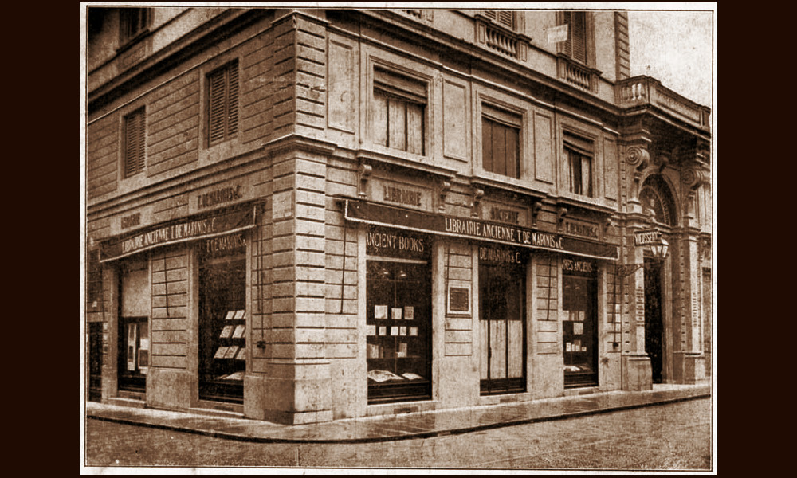

Forti
Roma, entità attiva dal 1920 al 1980

- PERSONA
- Vittorio Forti, 1881–1980, antiquario
- IN CATALOGO
- Opere transitate, catalogo della Fondazione Zeri →
L’avvocato di origini ebraiche Vittorio Forti (Firenze, 1881 – Roma, 1980?) si dedicò anche al commercio di opere d’arte, operando nella sua abitazione romana di via Panama 102/104 almeno dai primi anni Venti. Negli anni Dieci aveva già collaborato con uno dei più rilevanti antiquari di libri antichi e miniature, Tammaro De Marinis, per l’acquisizione di manoscritti a Costantinopoli su commissione di John Pierpont Morgan.
Anche individualmente trattò soprattutto fogli miniati e cuttings, come testimonia la serie di 33 negativi che Federico Zeri donò al Gabinetto Fotografico Nazionale tra il 1967 e il 1972, conservando poi come sua consuetudine una copia delle stampe nella sua fototeca. Su questi esemplari, prevalentemente estratti da manoscritti medievali e rinascimentali italiani, Forti dovette chiedere un parere a Zeri tra la fine degli anni Quaranta e la fine del decennio successivo, quando le miniature ricomparvero sul mercato americano (oggi la maggior parte di loro è conservata al Cleveland Museum of Art).
Dalla fototeca Zeri desumiamo che l’antiquario commercializzò anche dipinti del Trecento e Quattrocento italiani. Dovette rimanere in contatto con lo studioso romano per tutta la vita perché alcune fotografie sono ascrivibili a passaggi degli anni Settanta del Novecento.
Collaboratori
- Federico Zeri (storico dell'arte)
- Tammaro De Marinis (antiquario)
Bibliografia essenziale
- Botana F. (2022), Tammaro De Marinis, Vittorio Forti, and the Acquisition of Islamic Manuscripts for J. P. Morgan in Constantinople in 1913, «Manuscript Studies», Issue 7.2, 2022, pp. 237-269
- Manzari F. (2024), Illuminations from Northern and Central Italy in the collection of the dealer Vittorio Forti, Leeds, pp. 117-144